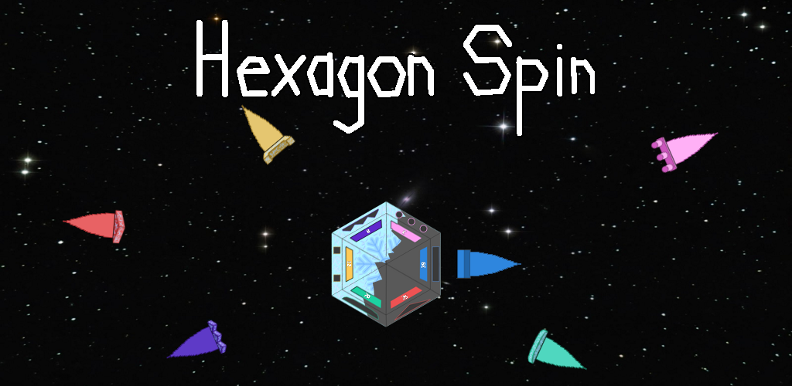

HexagonSpin

Description
Hexagon Spin tests your reflexes and more. Your goal is to top your high score and buy all the shop items. The game is too slow and easy? Then try the new difficulties and if you are up for a challenge, then color madness is for you. In easy mode, the puzzles come slow and vertically, so you have plenty of time to spin your hexagon to the right position. Medium mode is a much harder because the puzzles are not just faster, but they are also positioned horizontally. The puzzles get super fast in hard mode, but at the end of the game you get double the coins and experience than in easy mode.
In the game, you need to collect puzzles with your hexagon in the middle. Your hexagon has 6 sides, where on each side is a different shape and color. You turn your hexagon until the flying shape fits to the hexagon side. This takes some practice to get right, because it is only possible to turn your hexagon by moving your finger from LEFT to RIGHT or the other way around. After collecting the first coming blue rectangles, you get a point boost of 500 points and red triangles will appear more and more. That repeats until you unlock the last shape. After the last shape, the game speeds up rapidly.
note: This project was my absolute first programming experience, what took multiple attempts.
Download
Any Android phone can run this app, but sometimes the resolution is not adapted properly. The Plan for the next coming updates are more skins and a cat bundle; the sounds will get better and more…
© Made by Purpurax